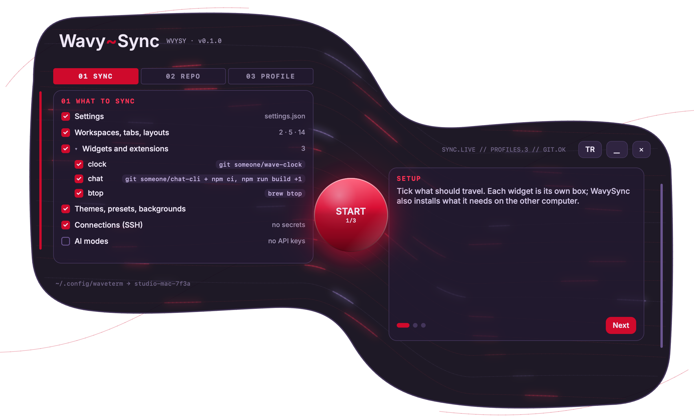

Your Wave Terminal, on every computer.
Settings, workspaces, tabs, layouts, widgets and the tools behind them, synced through a GitHub repo you own. One folder per computer. Apply any of them anywhere.
SYNC.LIVEMACOS · WINDOWS · LINUXRUST + RUNEMIT

Settings, workspaces, tabs, layouts, widgets and the tools behind them, synced through a GitHub repo you own. One folder per computer. Apply any of them anywhere.
Each computer writes only to its own folder. Every folder is a profile the others can take on.
A background process commits when Wave changes.
Nothing is lost: the current Wave is backed up first.
Choose a profile and where your future changes are saved.
This Wave is saved to a local backup folder.
Wave closes so its database can be written safely.
Config, workspaces and layouts land; widget tools get installed.
Wave starts again and changes flow to your chosen folder.
WavySync reads what each widget runs and installs it on the other side.
Pick what travels. Each part has its own switch, and each widget has its own box.
Workspaces, tabs, blocks and how you split them, read straight from Wave's database.
Git repos and build steps, Homebrew, npm, cargo, or the small script a widget runs.
Named after the computer by default. Rename it, apply another, or start a new one.
A quiet background process commits only when something actually changed.
Tokens, keys and passwords are stripped. Your home folder becomes {HOME}.
One binary for macOS, Windows and Linux, drawn with Rune, plus a widget in Wave's sidebar.
Setup on the left, live sync on the right. The same three steps stay as settings.



your-wave-profiles/ ├── studio-mac-7f3a/ │ ├── wavysync.json # host, system, last update │ ├── config/ # settings, widgets, themes │ ├── workspaces.json # workspaces, tabs, layouts │ ├── extensions.json # what widgets need │ └── files/ # small scripts, under {HOME} ├── work-imac-2c91/ └── ubuntu-lab-04be/
token, secret, password, apikey, privatekeyRun it, follow the three steps, and it adds itself to Wave's sidebar.
Not signed yet. On macOS run xattr -d com.apple.quarantine ./wavysync once. Needs git.